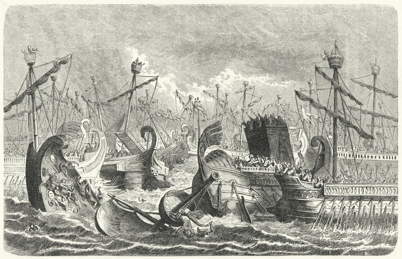

La Bataille des Îles Égates

Le contexte
En 241 av. J.-C., la première guerre punique dure depuis 23 ans. Les deux camps sont épuisés. Carthage tente de ravitailler ses troupes encore présentes en Sicile en envoyant une grande flotte chargée de nourriture et de soldats.
Rome l'apprend et envoie sa propre flotte intercepter les Carthaginois au large des îles Égates, un petit archipel à l'ouest de la Sicile. C'est là que tout va se jouer.
Source : Wikipedia — Bataille des îles Égates
Le déroulement de la bataille
La flotte carthaginoise est lourdement chargée de vivres et de soldats — elle est lente et difficile à manœuvrer. La flotte romaine, elle, est légère, rapide et ses marins sont bien entraînés.
Le consul romain Caius Lutatius Catulus attaque sans hésiter. Les Romains enfoncent les bateaux carthaginois avec leurs éperons et utilisent le corvus pour monter à bord. En quelques heures, c'est une victoire écrasante pour Rome — environ 50 bateaux carthaginois coulés et 70 capturés.
Source : Wikipedia — Bataille des îles Égates
Les conséquences
La défaite est si lourde que Carthage ne peut plus continuer la guerre. Elle demande la paix. Par le traité de Lutatius signé en 241 av. J.-C., Carthage doit abandonner la Sicile, libérer tous les prisonniers romains et payer une énorme somme d'argent à Rome.
C'est la fin de la première guerre punique. Rome devient la nouvelle maîtresse de la Méditerranée occidentale. Mais la humiliation de Carthage va planter les graines de la deuxième guerre punique — et d'Hannibal.
Source : Wikipedia — Traité de Lutatius